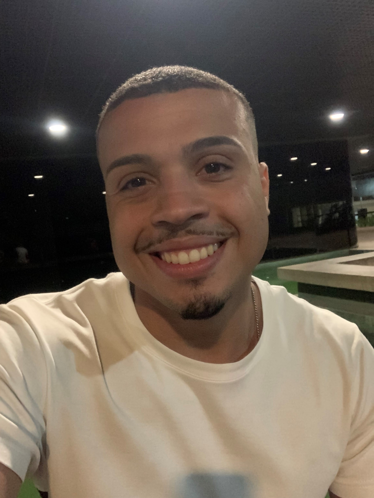

- Home
- >
- Contato
Currículo
Dados Pessoais:

Nome:
Matheus Correia e Silva
Data de Nascimento:
07/04/1999
Residência:
Jabaquara, São Paulo - Brasil
idiomas:
Português (Nativo)
Inglês (Avançado)
Sobre mim:
Tenho o objetivo de fazer parte da equipe de funcionários da empresa, tendo o objetivo de crescer profissionalmente e de maneira produtiva, agregar meus conhecimentos para o desenvolvimento da organização.
Experiência em atendimento, coleta e classificação de dados, conhecimentos sobre direito e psicologia devido a atuação em estágio na prefeitura de Diadema com ressocialização.
Me considero esforçado e consistente em aprender uma nova linguagem e me adaptar à qualquer mudança, pronto para superar qualquer desafio! Se eu pudesse me definir em 3 palavras, seriam: responsável, proativo e otimista!
Educação:
02/2022 - Em Andamento
Superior de Tecnologia em Análise e Desenvolvimento de Sistemas - FMU
02/2020 - 06/2021
Técnico em Administração - ETEC Juscelino Kubitschek
02/2017 - 06/2018
Técnico em Finanças - ETEC Juscelino Kubitschek
EXPERIÊNCIA DE TRABALHO:
C.P.M.A. – Centro de Penas e Medidas Alternativas 08/2015 a 06/2017
Atendimento presencial ao público interno e externo, Realizações de protocolos e registro de entrada de documentos, Conferência, alteração e atualização em planilhas do MS Office, Auxilio ao Supervisor e demais funcionários.
Frutaria São Paulo – 06/2019 a 04/2020
Exerci a função de estoquista: recebimento de produtos de limpeza, hortifrúti, perecíveis etc. limpeza, organização de alimentos por datas
Flampar – 07/2020 a 11/2020
Atendimento direto ao cliente, separação e organização de materiais para estoque ou entrega, contagem de produtos que se encontravam em estoque
Banco Mercedes Benz – 02/2021 a 01/2022
Atuei no setor MB Corretora de Seguros, no atendimento ao cliente, apoiando as equipes de vendas para garantia dos níveis de serviços; realizar suporte às rotinas administrativas e à operação de fornecedores
CONTATOS:
Email:
matheushavoc@outlook.com
Telefone/WhatsApp:
(11) 96311-3107
↩ Voltar ao inicio